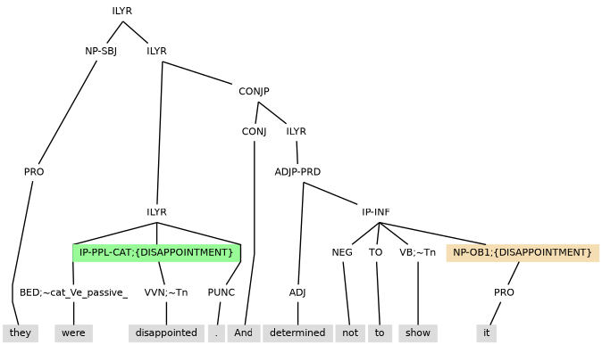
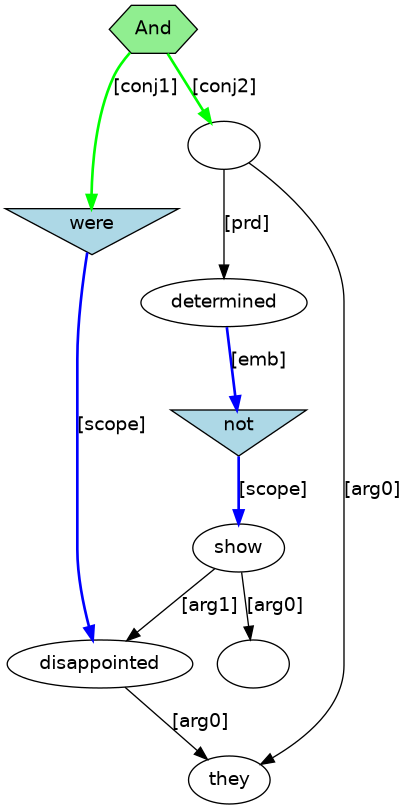
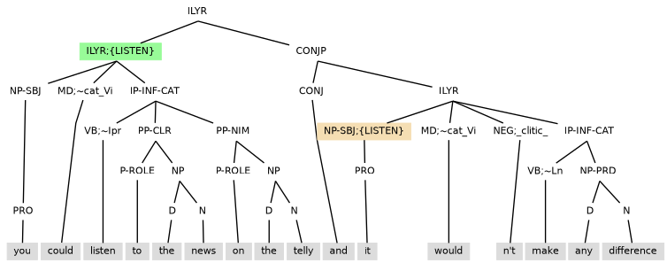
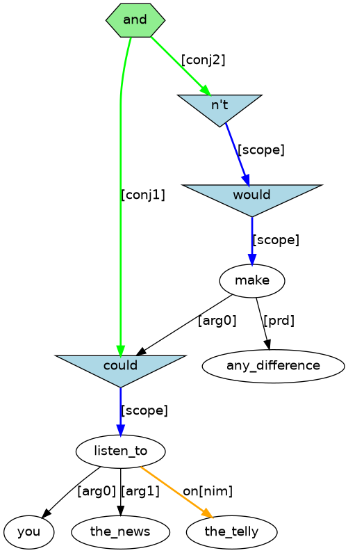
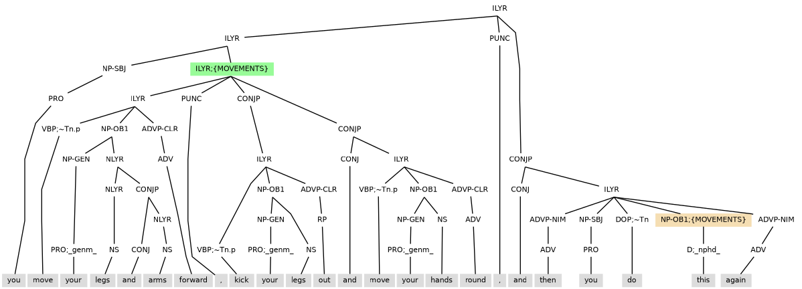
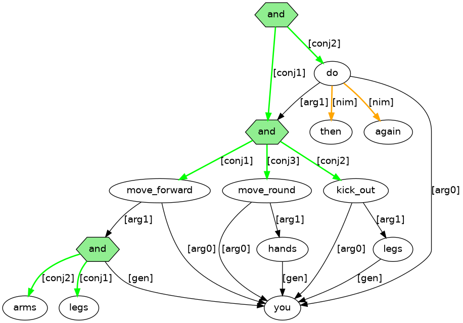

The annotation includes coreference information by adding witness information to the tag of a noun phrase (NP) level constituent. For a non-anaphoric noun phrase, the witness information provides type information for the discourse referent that the noun phrase serves to introduce. Witness information can can also be given to clause layers in which case it is used to type the discourse referent introduced by the local clause event. An anaphoric noun phrase that also has witness information can then be associated with any accessible discourse referent that has the same witness information.
Example (9.1) has pronoun it with the witness information of ;{DISAPPOINTMENT}.


Example (9.3) has pronoun it with the witness information of ;{LISTEN}.


Example (9.5) has demonstrative pronoun this with the witness information of ;{MOVEMENTS}. There is annotation to construct a discourse referent with NP-DSC (DSC=discourse element) built from the projection of three zero pronoun elements that link to prior clause layer witnesses: ;{MOVE1}=an event for the first move, ;{KICK}=an event for kick, and ;{MOVE2}=an event for the second move.

